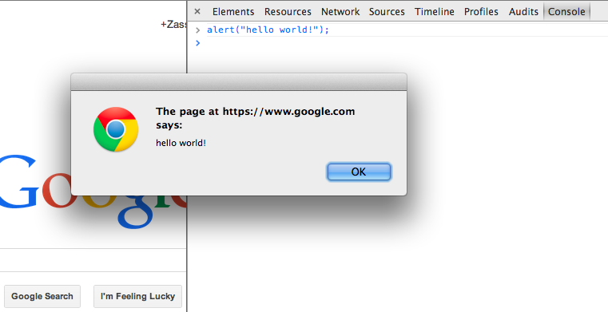

Today, we're going to recreate the classic game snake in the Javascript
programming language.
Download the tutorial
Before you can start the tutorial, you'll need to download the tutorial to your computer
to edit the source code.
Launch your programming environment
When programming, there's generally four tools you'll want on hand:
Your browser to see the code running (I recommend Chrome)
A text editor to change the code (I recommend Sublime)
A javascript console so you can experiment and print out debugging
messages. These are built into your browser.
Once you have these tools available, we need to open the files we'll be working with:
Open game/snake.js in your text editor
Open game/index.html in your browser
Open your browsers javascript console
type alert("hello world"); in your browsers javascript console
and dismiss the window that pops up

Stop and reflect
- The javascript console allows you to try out code and is one of the
fastest ways to get feedback on if the code will work or not. What other ways
can you get feedback on whether or not your code will work?
- Why shouldn't you use Word or Google Docs to edit code?
Helpful Links
- How to launch dev tools in chrome.
- How to launch dev tools in internet explorer.
- How to launch dev tools in firefox.
- How to launch dev tools in safari.